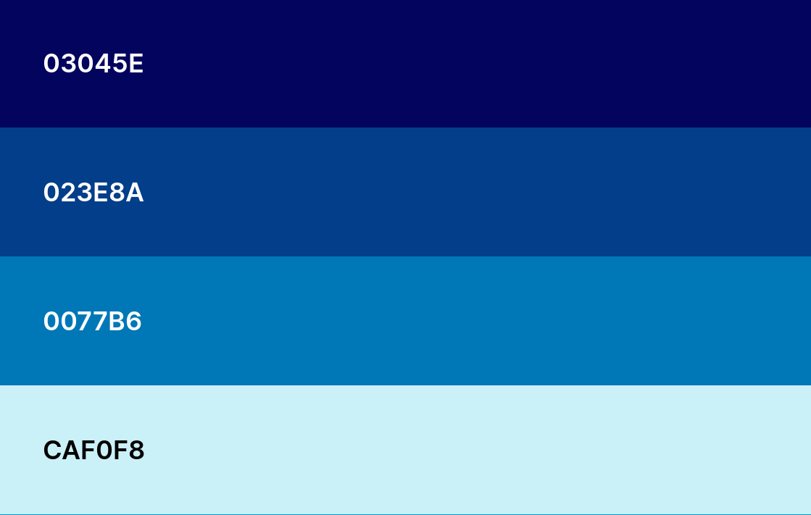

Color Scheme
Typography
Crimson Text, serif
Crimson Text, serif font used for head text, footer text, nav text titles and section H3 items.
Mulish, sans-serif
Mulish, sans-serif used for paragraphs.

Crimson Text, serif
Crimson Text, serif font used for head text, footer text, nav text titles and section H3 items.
Mulish, sans-serif
Mulish, sans-serif used for paragraphs.